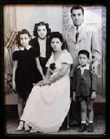
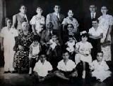

Cuba's other exiles:
Cuban Jews started over in Dallas
They,
too, fled Castro. But unlike most of their compatriots, these
Dallasites are Jewish
03/27/2002
By
MICHAEL GRANBERRY / The Dallas Morning News
This is
a difficult time for American Jews. With Passover beginning
at sundown Wednesday, many will say a prayer for Israel, a spiritual
home they see as being under siege.
But for
a small contingent of Jews living in Dallas, another "home"
crosses their mind as often as Jerusalem. And just as they do
every year, they will pray for Cuba as well.
"Ah, Cuba,"
says Zoila Sandler, whose friends call her Sonia. With a dreamy
voice and eyes to match, she describes her former home as "a
wonderful, wonderful, beautiful island, with beautiful people,
beautiful places to go ... very friendly, beautiful schools."

The
Savariego family, about 1945 in Cuba: Coty (left), Noemi and
Sam with parents Donna and Jose.
Coty came
to Dallas with husband Moses Eskenazi in 1962. Now in her 70s,
Mrs. Sandler chose to leave Cuba in November 1963, saying goodbye
to "Old Havana," the flora and fauna, the palm trees and the
beach at Varadero, with its thick white sand and turquoise water,
where each night "a million stars" covered her like a blissful
canopy.
"I had
a beautiful childhood in Cuba," she says. "We were poor people.
My mother often lacked the money to buy groceries, even though
my father was a great working man. But life at that time was
not so expensive.
"In many
ways, I miss Cuba. I would love to go back, if only to visit
my old house and Old Havana, where I grew up. Most of my years
there were happy ones. It was there that I married a wonderful
man and gave birth to our three children."
But today,
Mrs. Sandler has been a resident of Dallas for 38 years. Most
of her fellow exiles who happen to be Jewish have been here
even longer. Just as she does, they carry with them a litany
of heart-wrenching stories.
They gave
up everything or had it taken away. They arrived in Dallas penniless
and overwhelmed, having to reconstruct lives torn asunder, much
as their European relatives did in the wake of the Holocaust.
"We were
allowed to leave Cuba with only two changes of clothing and
only one pair of shoes," says Mrs. Sandler. En route to Dallas,
she and her husband had their suitcases stolen in Mexico, leaving
them only with the clothes they were wearing. They also lost
one of their prized possessions, the family photo collection.
What
was lost
For Moses
and Coty Eskenazi, the situation was much the same. They gave
up a thriving dry-goods business near Havana and a newly constructed
3,500-square-foot home with marble floors. They arrived in Dallas
in January 1962 with almost no money and only the prospects
of a blue-collar job.
"We lost
all our properties, and our bank accounts were confiscated,"
says Mr. Eskenazi, 72, who went on to become one of Dallas'
most successful insurance brokers. He later became part-owner
of a company that manufactured steel machinery.

The
Eskenazis, shown in the late 1930s, came to Cuba in the 1920s
after migrating from Turkey. Moses is seated in the front row
(center); his parents are in the back row (center).
Though
no one has exact estimates, the Jewish Federation of Greater
Dallas says the Sandlers and Eskenazis are among several hundred
families of Cuban Jewish origin living in North Texas. Officials
for the Miami-based Latin American Sephardic Federation say
that, with a population of several thousand, Texas is home to
one of the largest concentrations of Cuban Jews outside Florida,
whose estimates exceed 20,000.
Mrs. Sandler
says Dallas' Cuban Jews still hold celebrations, though not
as often as before. When the families began arriving in the
1960s, their children were young. Even the grandparents were
still alive. Generations of bar and bat mitzvahs have come and
gone, as have weddings and anniversaries.
Synagogues
"did all they could" to embrace the new arrivals, says Mrs.
Sandler, noting that Tiferet Israel, Shearith Israel and Temple
Emanu-El all offered free one-year memberships to anyone emigrating
from Cuba. But even when the Cuban Jewish social scene was at
its peak, its get-togethers often included Gentiles. "We would
celebrate on Jan. 28, the birthday of [Cuban national hero]
Jose Marti," says Mrs. Sandler, "and we would celebrate on May
20, which marks Cuba's independence from Spain. And we still
do that.
"Our celebrations
included Catholics, Protestants and Jews, as well as black people,
Chinese people, Hispanic people. The one thing we all had in
common was being from Cuba. But many of the older people, they
[died], and the younger people, instead of being 14 or 15, are
now 51 or 52."
Collective
bitterness
Even today,
most remain united in a feeling of collective bitterness toward
the Marxist regime of Fidel Castro, who seized power in the
revolution of 1959, toppling corrupt dictator Fulgencio Batista.
The Castro government soon began seizing all private land holdings
as well as businesses and bank accounts. Churches and synagogues
suffered, too, with many shutting their doors for good.
Though
never accused of anti-Semitism, Castro was, say the exiles,
intolerant of religion as a whole, as was the Kremlin that financed
his efforts until the fall of the Soviet Union in 1989. Castro's
critics contend that, until he allowed the visit of Pope John
Paul II in 1998, churches and synagogues were forced to operate
largely in secret.
But since
then, the situation has changed, and in some ways, changed dramatically.
Gary Weinstein,
executive vice president of the Jewish Federation of Greater
Dallas, accompanied a delegation of 30 civic and business leaders
from Dallas' Jewish community on a tour of Cuba two years ago.
They experienced
what he calls "a rejuvenation of Jewish life in Cuba, a reconnection
to the Jewish religion and a revival of Jewish culture." The
Dallas group raised more than $50,000 to provide for Cuba's
1,800 remaining Jews "a Friday night Shabbat [Sabbath] dinner
for two full years."
"They
can't afford meat," says Mr. Weinstein, "and they can afford
chicken only twice a month."
He, too,
noticed that synagogues are re-emerging all across Cuba. And
several new books examine the lives of Cuban Jews. Among the
more prominent are a novel titled Days of Awe, by Achy Obejas
(Ballantine, $24.95), and a memoir, The Last Minyan in Havana,
by Betty Heisler-Samuels (Chutzpah Publishing, $14.95). There
also is a new Web site, www.jewishcuba.org.
But old
feelings are hard to shake. Mr. Weinstein says no one in the
Dallas contingent who flew to Cuba two years ago had ever lived
there. In other words, no one in "the funding group" who made
the trip was a member of the city's exile community. Many of
Dallas' Cuban transplants have mixed feelings or claim to have
no desire to return to a land where too many bad memories mingle
with the good.
Leaving
anti-Semitism
Coming
from a long line of Ashkenazi (Eastern European) Jews, Mrs.
Sandler's family left their home in Minsk, in the former Soviet
Union, in 1929, motivated by a desire to leave behind both communism
and anti-Semitism.
During
the Holocaust in Europe, Cuba was a place to feel safe, she
says, never knowing that it, too, would be a home she and her
family would want to leave.
By 1962,
she and her late husband, Manuel Sandler, had seen their lucrative
family business (manufacturing a line of apparel for boys) and
their bank accounts confiscated by the Castro government. They
had sent their oldest son and daughter to live with relatives
in 1961 and wouldn't see them again for two years. It was "the
darkest point in our lives," she says.
Her children
Benny, 52; Silvia, 48; and Fabio, 45 (who later changed his
name to Fabian) were all born in Havana. For two years, however,
Benny and Silvia lived apart from their parents, staying with
relatives in the United States.
Mr. Eskenazi
and his wife, Coty, 67, suffered a similar fate. They had just
finished building a lavish new home with marble flooring throughout
even in the garage! Within months of seeing it completed, they
had to leave it behind.
As a member
of what he calls "the counterrevolution" in his hometown of
Artemisa, Mr. Eskenazi was arrested three times. On one occasion,
after the ill-fated Bay of Pigs invasion in April 1961 a U.S.-backed
effort by Cuban exiles to reclaim their homeland he was detained
for three days, along with thousands of other dissidents.
At that
point, "I saw the handwriting on the wall," he says, and prompted
by his wife's urgings, made plans to leave immediately.
"They
wanted to take our children and have them be 'scouts,' " he
says. "This wasn't the Boy Scouts, you understand. Castro was
taking them to be in service to his new government."
Mrs. Sandler
describes the specter of losing one's children as "a panic"
that ripped through Cuba like a plague in the early 1960s. In
her opinion, that alone was the reason for so many Cubans, Jewish
or otherwise, to want to leave as fast as possible.
Through
the backing of the Hebrew Immigrant Aid Society (HIAS), the
Eskenazis were flown to Kingston, Jamaica, in October 1961 and
waited there for six weeks. If anything, says Mrs. Eskenazi,
it made them feel a kinship with their ancestors, Sephardic
Jews who had migrated from Judea in 90 A.D. to Spain to Turkey
and then to Cuba in the 1920s. When they arrived in Dallas,
Mr. Eskenazi took a job unloading boxcars. He routinely had
to lift 100-pound bags for six days a week, earning $75 for
his labor.
"After
a while, they realized that maybe I was a little bit intelligent,"
he says. "I quit at one point. I just couldn't take it any longer.
But then I went back and worked for another year until a good
friend of mine, working for an insurance company, hired my brother
Simon. For one year, Simon led Texas in selling insurance, and
then he hired me and I led the nation [in sales] for two and
a half years." Eventually the Eskenazis built a home near Royal
Lane and stayed there for 25 years before moving into a high-rise
luxury condominium. Their children Sammy, 45 (who followed his
father into the insurance business); Sara, 44; and Josie, 35
remain in the Dallas area.
Memories
of a culture
As a boy
of 4, Sammy Eskenazi remembers hiding in the kitchen as members
of Castro's army stormed the family home looking for his father.
But despite such a grim memory, he loves shopping at La Favorita,
a Cuban grocery near Bachman Lake, and buying Cuban sandwiches
and pastries at Carrollton's International Bakery.
Mrs. Eskenazi
says her family still craves Cuban food, and for a recent Friday
night Shabbat, that's exactly what she cooked for a visiting
nephew, who came from Turkey via the University of Richmond
in Virginia. She cooked arroz con pollo (chicken with rice),
black beans and fried plantation bananas, just like they make
at La Bodeguita del Medio, one of Havana's most popular restaurants,
once frequented by the likes of Errol Flynn and Ernest Hemingway.
As much
as he likes the food, Moses Eskenazi says his family has no
desire to return to Cuba, even for a visit.
"If Castro
had never come, we would still be in Cuba, and we would be happy,"
says his wife. "But we love it here. Dallas is our home and
always will be. We raised our children here, and now we have
grandchildren here. Dallas has been very, very good to us. In
our opinion, it's a wonderful place. And it is our home."
E-mail
mgranberry@dallasnews.com